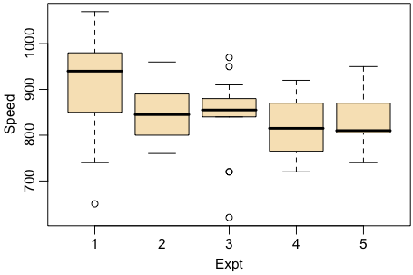
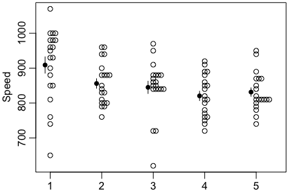

Michelson（マイケルソン）とMorley（モーリー，モーレー）の実験は，光速が地球の動きによらず一定であることを示し，Einstein（アインシュタイン）の特殊相対性理論の礎となったことで有名です。
地球は太陽から約1.5億km（1.5×108 km，1.5e8 km）のところを1年間で一周しますので，それだけでも30 km/秒で動いているはずです：
2*pi*1.5e8/365/24/60/60
[1] 29.88577
もし光の速度が「宇宙」（昔の言葉で「エーテル」）に対して一定であれば，光速を測る向きによって少なくとも60 km/秒の違いが出るはずです。実際には太陽も銀河系の中心のまわりをもっと速く回っているはずですし，銀河系も動いているはずですから，光速は向きによってもっともっと違うはずです。
しかし，Michelsonたちの実験によれば，光速は向きによらず一定でした。歴史的なMichelsonとMorleyの1887年の論文はAIPの Albert Abraham Michelson 1852-1931 で公開されています。
Rのサンプルデータとして含まれているものは，1879年のデータです：
head(morley)
Expt Run Speed
001 1 1 850
002 1 2 740
003 1 3 900
004 1 4 1070
005 1 5 930
006 1 6 850
Exptは実験番号で1〜5まであり，そのそれぞれについてRunが1〜20まであり，全部で100の計測値が収められています。Speedは光速（km/s）から299000を引いた値です。データはすべて整数型です：
sapply(morley, class)
Expt Run Speed
"integer" "integer" "integer"
現在では光速は定義値で，ぴったり 299792458 m/s です（そうなるように1メートルの長さが定められています）。
同じデータがMASSパッケージにも michelson という名前で収められています：
library(MASS)# MASSライブラリをロードするhead(michelson)# 最初の数行を表示してみる Speed Run Expt 1 850 1 1 2 740 2 1 3 900 3 1 4 1070 4 1 5 930 5 1 6 850 6 1
MASSは，Modern Applied Statistics with S-PLUS（邦訳『S-PLUSによる統計解析』シュプリンガー・フェアラーク東京，2001年）という有名な本のコードやデータを収めたパッケージです。こちらのSpeed，Run，Exptは，モードは数値で，型は整数ですが，RunとExptのクラスは名義尺度の因子（factor）です：
sapply(michelson, mode)Speed Run Expt "numeric" "numeric" "numeric"sapply(michelson, typeof)Speed Run Expt "integer" "integer" "integer"sapply(michelson, class)Speed Run Expt "integer" "factor" "factor"
箱ひげ図を描いてみましょう：
boxplot(Speed ~ Expt, data=morley)
これだけでもいいのですが，少し色を添えましょう：
par(mgp=c(1.8,0.6,0)) # 数字を軸に少し近づける boxplot(Speed ~ Expt, col="wheat", data=morley, xlab="Expt", ylab="Speed")
ここで使っている図はボックスプロット（boxplot，box-and-whisker plot，箱ひげ図）と呼ばれるものです。ボックスプロットにはいろいろな流儀がありますが，ここでは，真ん中の横線が中央値（メディアン），箱の両側が第1・第3四分位点（25%・75%点），ひげの先端が最小値・最大値を示しますが，どちらのひげも長さは箱の長さの1.5倍を限度とし，それより極端な値はoutlier（外れ値）として個々の点をプロットします。その場合，ひげの先端は外れ値を除いた最小値・最大値になります。
ほかにもいろいろなグラフが描けます。右のものは次のコマンドで描いたものです：
stripchart(Speed ~ Expt, vert=TRUE, method="stack", pch=1, at=1:5+0.1, data=morley) m = with(morley, tapply(Speed, Expt, mean)) # 平均 s = with(morley, tapply(Speed, Expt, sd)) / sqrt(20) # 標準誤差 points(1:5, m, pch=16) # 平均は黒丸で segments(1:5, m-s, 1:5, m+s) # ±標準誤差は線分で
segments()
の代わりに arrows()
を次のように使えば両端にセリフの付いたエラーバーになります：
arrows(1:5, m-s, 1:5, m+s, length=0.05, angle=90, code=3)
stripchart の変形（改良版？）beeswarm（ビースウォーム）も便利です。この名前はbee（蜂）のswarm（群れ）から来ています。beeswarm パッケージには boxplot のシンプル版 bxplot() も入っています。beeswarm() と boxplot() または bxplot() を組み合わせるとわかりやすくなります。
分散分析をした結果です：
oneway.test(Speed ~ Expt, data=morley)One-way analysis of means (not assuming equal variances) data: Speed and Expt F = 3.0061, num df = 4.000, denom df = 47.044, p-value = 0.02738oneway.test(Speed ~ Expt, data=morley, var.equal=TRUE)One-way analysis of means data: Speed and Expt F = 4.2878, num df = 4, denom df = 95, p-value = 0.003114
仮に第1実験を外せば変動は有意でなくなります：
oneway.test(Speed ~ Expt, data=morley, subset=(Expt!=1)) # または oneway.test(Speed[Expt!=1] ~ Expt[Expt!=1], data=morley)
物理実験ではこういうのは常日頃のことです。原因は温度変化などいろいろです。
Last modified: